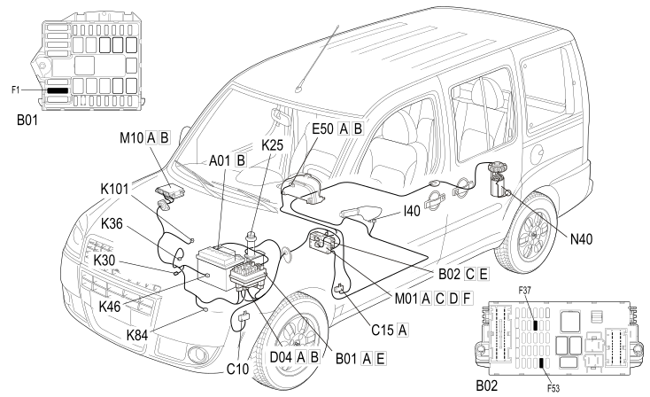

E4010 INSTRUMENT PANEL - COMPONENT LOCATION
- Path
- Electrical equipment > 1 ELECTRICAL FUNCTIONS > E40 INSTRUMENT PANEL > E4010 INSTRUMENT PANEL > E4010 INSTRUMENT PANEL - COMPONENT LOCATION
- Kind
- component location drawing
- Applies to
- engines: 1.9 JTD 8V; production: da 12/03; only with equipment: MY 2005
- Interactive page
- https://sloeber94.github.io/elrnDB-fDbl/en/#/223002518
Applies to: engines: 1.9 JTD 8V; production: da 12/03; only with equipment: MY 2005

Component code | Description | Reference to the assembly |
|---|---|---|
JUNCTION UNIT | ||
JUNCTION UNIT UNDER DASHBOARD | ||
LEFT FRONT EARTH | ||
DASHBOARD EARTH, DRIVER'S SIDE | ||
FRONT/ENGINE COUPLING | ||
INSTRUMENT PANEL | ||
IGNITION SWITCH | ||
HANDBRAKE SWITCH | ||
BRAKE FLUID LEVEL SENSOR (SWITCH) | ||
ENGINE OIL PRESSURE SENSOR (SWITCH) | ||
ENGINE COOLANT TEMPERATURE SENSOR/SENDER UNIT | ||
RPM SENSOR | ||
SPEEDOMETER SENSOR | ||
FUEL TEMPERATURE AND WATER IN FUEL FILTER SENSOR | ||
BODY COMPUTER | ||
ENGINE MANAGEMENT ECU | ||
FUEL PUMP AND LEVEL GAUGE |
Topics linked from this page (25)
- 1060G pressure pump electric control
- 1084A indicators/check devices
- 2180A milometer control
- 3330D brake vacuum system
- 5505A multi-function components
- 5520A ignition switch
- 5550D brake and reversing lights
- 5560B analogue control panel
- B001 JUNCTION UNIT
- B002 JUNCTION UNIT UNDER DASHBOARD
- C010 LEFT FRONT EARTH
- C015 DASHBOARD EARTH, DRIVER'S SIDE
- D004 FRONT/ENGINE COUPLING
- E050 INSTRUMENT PANEL
- H001 IGNITION SWITCH
- I040 HANDBRAKE SWITCH
- K025 BRAKE FLUID LEVEL SENSOR (SWITCH)
- K030 ENGINE OIL PRESSURE SENSOR (SWITCH)
- K036 ENGINE COOLANT TEMPERATURE SENSOR/SENDER UNIT
- K046 RPM SENSOR
- K84 SPEEDOMETER SENSOR
- K101 FUEL TEMPERATURE AND WATER IN FUEL FILTER SENSOR
- M001 BODY COMPUTER
- M010 ENGINE MANAGEMENT ECU
- N040 FUEL PUMP AND LEVEL GAUGE